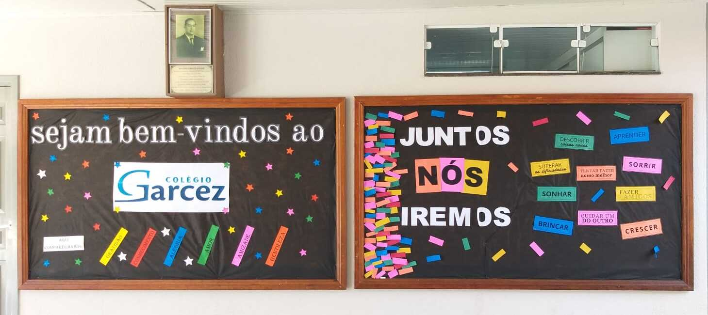

Sobre o Colégio
Colégio Estadual Antonio Garcez Novaes está localizado na região central de Arapongas - Pr.
Oferece educação gratuita de qualidade para as séries finais do Ensino Fundamental, Ensino Médio e Técnico Profissionalizante com os cursos: Técnico em Farmácia, Técnico em Edificações, Técnico em Enfermagem e Técnico em Segurança do Trabalho.
